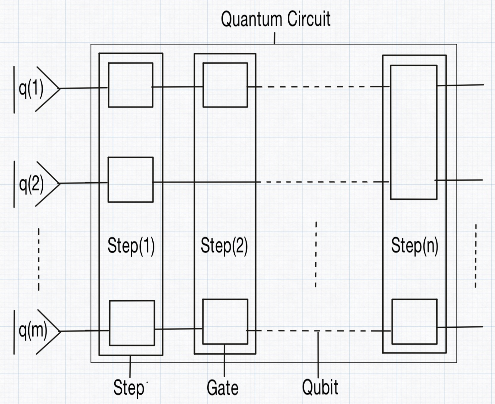
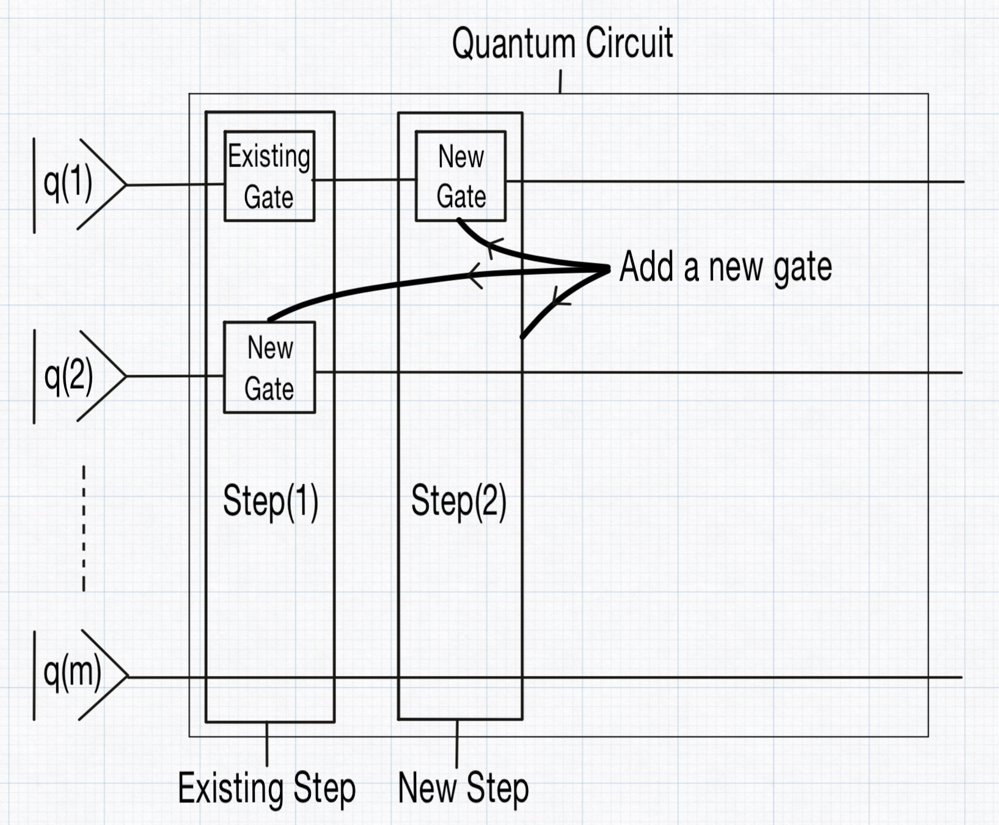

How you define the quantum circuit
In QubiSim, a QuantumCircuit is made up of a collection of qubits and a sequence of steps. Each step represents an abstract slice of time during which certain operations occur. In this context, an "abstract time slice" refers to a conceptual moment in the quantum circuit's evolution, rather than a specific or measurable duration. During each step, a set of quantum gates is applied to the qubits simultaneously, meaning all the gates within that step operate in parallel, but only within that abstract moment. Each gate in a step acts on a specific subset of the qubits, and QubiSim supports three types of gates: UnitaryGate, MeasureGate and a QuantumChannelGate. However, all gates in a single step must belong to the same category; different types cannot be mixed within the same step. The package provides a wide range of built-in unitary gate options for users to choose from.

A new QuantumCircuit is created with createQuantumCircuit. With the optional parameters zeroBasedNumbering::Bool and IndexType you can define the qubit indexing settings. Qubit indices start from 0 if zeroBasedNumbering is set to True, otherwise they start from 1. IndexType defines if qubits are indexed in circuit-form (BigEndian = default or LittleEndian) or in byte-form. Another way of creating a QuantumCircuit can be done with createQuantumCircuitWithSettings by providing Settings with createSettings.
QubiSim provides functions to add gates to the QuantumCircuit. These gates are positioned in the circuit in the same way as blocks fall in their place in the game of Tetris. A new gate is either placed in a new step and appended to the circuit, or merged into an existing step.

The following UnitaryGates are provided:
Single-qubit gates:
u1Gate!,u2Gate!,u3Gate!,xGate!,yGate!,zGate!,hGate!,idGate!,rxGate!,ryGate!,rzGate!,rotationGate!,projectionGate!,tGate!,tdGate!,sGate!,sdGate!Double-qubit gates:
cnotGate!,cnotReverseGate!,swapGate!,phaseGate!,controlledHGate!,controlledXGate!,controlledYGate!,controlledZGate!,controlledTGate!,controlledTdGate!,controlledSGate!,controlledSdGate!N-qubit gates:
unitaryUGate!,reflectionGate!,expHGate!,qftGate!,iqftGate!,controlledUGate!,qpeGate!
Use measureGate! to add a MeasureGate. QubiSim supports two types of quantum measurements:
- projective measurement (PVM) defined by the list of single qubit measure direction operators
Sigmas. They can be constructed withsigmaX,sigmaY,sigmaZor more general withsigmaN. - generalized measurement (POVM) defined by the
KrausOperators. WithgenerateKrausOperatorsForPVMMeasurementyou can create the Kraus operators for a projective measurement (PVM) which is a special case of the generalized measurement (POVM).
Use quantumChannelGate! to add a QuantumChannelGate. The quantum channel gate is defined by the KrausOperators. With generateKrausOperatorsForDepolarizingChannel, generateKrausOperatorsForPhaseDampingChannel and generateKrausOperatorsForAmplitudeDampingChannel you can create the Kraus operators for a depolarizing quantum channel, phase damping quantum channel and amplitude damping quantum channel, respectively.
A barrier! can be added to the QuantumCircuit to visually and functionally separate different sections (steps) of the circuit. They are primarily used for clarity and control over gate execution order in the circuit, without affecting the quantum state.
With concatenateQuantumCircuits you can concatenate two given quantum circuits. Use inverseQuantumCircuit to construct the reversed quantum circuit of a given quantum circuit. To create the Quantum circuit for a Fourier Transform or its inverse use createNQubitQFTQuantumCircuit or createNQubitIQFTQuantumCircuit. With createNQubitQPEQuantumCircuit you can create a quantum circuit for a quantum phase estimation. Given a QuantumCircuit, a specific step can be retrieved with getStep from which a specific gate can be retrieved with getGate from which the specific connected qubits can be retrieved with qubits.